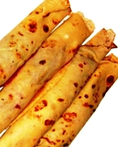
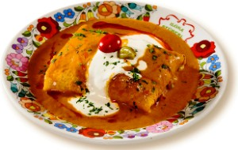
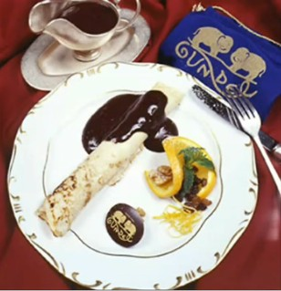
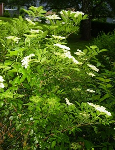

|
Kochrezepte |
|
|
|
|
| |
| |
| |

|
| |
| |
| |
| |
| |
|
|
| |
| |
| |
| |
| |
| |
| |
| |
| |
|
|
|
|
| |
| |
| |
| |
|
|
|
|
|
|
|
|
| |
| |
| |
|
| |
|
|
Palatschinken kennt man weltweit als
Pfannkuchen, Pancake oder Crepes u.a. Viele Ungarn wunderten
sich nach der Grenzöffnung, dass ihr Palatschinken keine
ungarische Spezialität ist. Dabei ist das ungarische Wort Palacsinta für Pfannkuchen gar kein ungarisches
Wort, es kommt direkt aus der Walachei und erinnert daran, wie einst die Österreicher nach der
Einverleibung für sich alles neu beschrieben und so sollte der Palatschinken
zuerst über Böhmen zu Österreich und erst dann nach
Ungarn als Palacsinta eingebürgert werden. Das ist zwar ein
komplizierter Weg, aber in
Österreich wird es auch heute noch so getan in den Kochbüchern.
Dabei sind Palatschinken wahrscheinlich seit Jahrtausenden
weltweit bekannt und haben mit Ungarn, Österreich oder der Walachei
wenig zu tun. In der Tat gibt es aber einige besondere Palatschinken-Varianten
in Ungarn, die man in anderen Ländern so nicht kennt - daher gehen
wir hier auf das Thema Eierpfannkuchen ein.
|
 |
Die
Palatschinken werden in Ungarn so aufgerollt wie auf dem rechten Bild und wenn man viele Gäste hat, auf einem Backblech
aufgereiht im Backofen
erwärmt, damit man sie gleichzeitig warm servieren kann. Ob das Aufrollen
von den Türken stammt, das wissen wir nicht, liegt aber nah. Erst
in letzter Zeit wird Pfannkuchen auf dem Teller gefaltet wie
Crêpes in Frankreich - weil das kulinarisch sein soll, dabei ist
das nur einfacher für Neuanfänger in der Gastronomie.
Die im folgenden Grundrezept angegebene Menge reicht für
etwa 20 Palatschinken |
Zutaten: 2
Eier, 2 Beutel Vanillezucker, 200 g
Mehl, 0,5 l Milch, 200-300 ml Mineralwasser (mit Kohlensäure), Speiseöl zum
Braten.
Füllung: Marmelade, Kakao oder aller andere nach
Belieben. In Ungarn besonders beliebt sind:
1.
eine Mischung
von Sauerrahm und Quark, die mit Rosinen bereichert werden.
2.
Gemahlene Walnüsse oder Mohn mit Aprikosenmarmelade gemischt,
3.
Palatschinken mit Fleischfüllung à la Hortobágy - dazu siehe unten das
nächste Rezept.
|
| |
Wie
sollen die Pfannkuchen schmecken?
Nur
mit Milch zubereitet werden die Pfannkuchen weich, aber dick und
schwer. Wenn man einen Teil der Milch mit Sodawasser ersetzt, sind
die Pfannkuchen dünner und leichter.
Die Zugabe von Zucker macht die Palatschinken knuspriger (durch Karamellisierung im Teig).
Es ist
jedoch Vorsicht geboten, der Zuckeranteil verbrennt bzw. verkohlt schneller, als
man denkt, weil man beim Braten die Oberseite sieht. Hat man zu
viel Zucker in den Teig gemischt, verbrennen die
Pfannkuchen von außen, bevor sie überhaupt gebraten
sind.
Den
Pfannkuchenteig können Sie, je nach Füllung und
Phantasie, mit der Zugabe von Kräutern, Reibekäse und
Gewürzen abrunden.
|
Zubereitung:
Außer Öl alle Zutaten verquirlen, am einfachsten in
einem elektrischen Mixer.
Unterschiedliche
Eiergrößen und ungenaues Messen der
Zutaten führen dazu, dass sie auf Ihre Erfahrung angewiesen
sind. Ist der Teig zu schlank, mischt man Mehl dazu, ist der Teig zu
dick, dann Milch oder Sodawasser dazu mischen. Hat man zu viel Flüssigkeit und
Mehl, dann wird irgendwann das nächste Ei fällig, damit die Mixtur
geschmeidig zusammenbleibt. Das zu erkennen,
benötigt man etwas Erfahrung und Gefühl.
Den Teig in einem mit
Tuch zugedeckten Schüssel 1/4 Stunde lang an einer warmen
Stelle quellen lassen. Für Feinschmecker und wenn man auf die schlanke Linie achtet, sollte
man den Teig mit
wenig Hefe stärker aufquellen lassen.
Der Teig geht auf, erscheint schlanker, kann
dünner gebraten werden und die Pfannkuchen werden bekömmlicher.
Zubereitung mit Hefe: 1/2
Würfel gilt für Deutschland, in Ungarn wird Hefe
weniger gestreckt und es reicht dort 1/4
Würfel. Die Zutaten (und die im wenig Warmwasser
aufgelöste Hefe) verquirlen zum Pfannkuchenteig. Den Teig in
einem mit Tuch bedeckten Schüssel mindestens eine halbe
Stunden lang an einer warmen Stelle quellen lassen.
|
Die Füllung: für
Palatschinken gilt allgemein, dass sie mit allen Speisen
belegt werden können - lassen Sie Ihre Phantasie
aufblühen.
|
Serviervorschlag:
immer
auf warmen Teller servieren.
Tradtionelle ungarische Zutaten für die
Füllung sind: |
- verschiedene Marmeladen,
- Walnuss oder Mohn gemahlen - sie werden mit Zuckerwasser zu einem
dicken Brei gerührt,
- Fleischfarce, wie beim Palatschinken à la
Hortobágy beschrieben,
-
Schokoladensauce, wie beim Palatschinken à la Gundel
beschrieben.
|
Tipp: Pfannkuchen aus viel Mehl und wenig Ei und Milch
zubereitet eignet sich für die Befüllung wie Wrap mit unzähligen
erdenklichen Zutaten.
|
| |
|
Palatschinken à la Hortobágy / hortobágyi palacsinta |
| |
- Ein
Rezept aus dem Pusztagebiet
Hortobágy bei Debrecen -
|
Das
Bild
rechts zeigt, wie der Hortobágyer Palatschinken im
in Wien serviert
wird - landestypisch, wie sonst kaum noch zu sehen in Ungarn!
Zuerst
wird
gekocht, das Hühnerfleisch durch den Fleischwolf gedreht oder mit
einem Messer feingehackt und als
Füllung verwendet. Auch die Sauce wird aus der Kochflüssigkeit vom
fertigen Paprikahuhn genommen und evtl. mit Mehlschwitze eingedickt. Das Rezept
soll zur Küchenphantasie verleiten, denn die Fleischfüllung
eignet sich für vieles. |
 |
Das folgende Video zeigt die Zubereitung der Palatschinken à
la Hortobágy,
besprochen auf Ungarisch. Darunter beschreiben wir das Rezept
auf Deutsch anhand der im Video besprochenen Erklärungen.
|
Vorbereitung:
1.
Zuerst wird
gekocht - im Video bis 1Min 35Sek:
Nach dem Paprikahuhn-Rezept kochen
aus den Zutaten: 100 g Butter, 0,3 l Sauerrahm, 1
süße Tomate, 1 gelbspitze Paprikaschote, 1/3 Bund
Petersiliengrün, Salz, gemahlener schwarzer Pfeffer. - Das
Fleisch von Knochen befreien, enthäuten und durch
den Wolf püreeartig fein mahlen oder einfach nur mit dem Messer klein
hacken.
2. ca. 15-20 Stück
Pfannkuchen braten aus den Zutaten - im Video 1Min 55Sek bis 2Min
30Sek:
250 g Mehl, 3 Eier, 250 ml Milch, Mineralwasser mit
Kohlensäure, 1 Prise Salz, Öl zum Braten.
|
Zubereitung
- im Video ab 2Min 45Sek:
Das Hühnerfleisch aus dem Topf
nehmen, eine Mehlschwitze aus Sauerrahm und Mehl in die
Kochflüssigkeit unterrühren, sieben. Das gekochte, mit Messer
kleingeschnittene (oder durch den Wolf gedrehte)
Hühnerfleisch in die Pfannkuchen wickeln.
|
Vermerk: Für
die Füllung kann man statt
Paprikahuhn das Fleisch aus Hühner-, Puten-, Kalbs-, Rinder- oder
Schweinegulasch nehmen und kleinhacken oder durch den Wolf drehen. Damit ist
das Rezept zwar nicht mehr original, das Ergebnis schmeckt aber möglicherweise besser.
|
Am Bild rechts erkennt
man, wie die Küche international ist, da sieht man die östliche
Variante von Palatschinken à la Hortobágy. Am Teller sind
polnische Pierogi, die in Sibirien auf Russisch Pelmeni bezeichnet
werden.
In kleinere Pfannkuchen oder Teigtaschen wird fein gemahlenes Rindsfleisch gewickelt, in Polen
gleich, in Sibirien zum Winterbeginn in großer Menge auf Vorrat
zubereitet, eingefroren und erst nach dem Auftauen gekocht.
Entscheiden Sie bitte selbst darüber, ob Palatschinken
à la Hortobágy mit Piroggi bzw. Pelmeni, schwäbichen Maultaschen, südtiroler
Schlutzkrapfen, italienischen Tortellini, bosnischen Klepe,
türkischen Manti besser
vergleichbar ist. Wir sind der Meinung, diese Nationalgerichte unterscheiden sich im Wesentlichen nur in der Garnierung und dass
der Hortobágyer Palatschinken grundsätzlich mit Hühnerfleisch
gefüllt wird und die Sauce dazu zwar überall etwas edelsüßes
enthält, aber nur in Ungarn kommt das Paprikapulver ins Spiel. |
 |
Merke:
In Ungarn
weiß ein jeder, dass man Hortobágyer Palatschinken ausschließlich zuhause
essen soll. Der Grund dafür ist klar: mit feingemahlenem Fleisch
gefüllte Pfannkuchen haben einen schlechten Ruf. In Restaurants
werden oft die Fleischreste aus vergangenen Tagen verwendet und man sollte nicht
glauben, das wäre in 5-Sterne-Restaurants anders, denn öfter
aufgewärmtes Fleisch schmeckt besser als einmal lange gekochtes
Fleisch und für den Geschmack bekommen Hotels, Restaurants und die Köche ihre Sterne
- meistens auf Bestellung oder nach Absprache mit dem Gastwirt.
Wie denn sonst könnten sich die Hotel- und Restauranttester ihr
luxuriöses Dasein bei einer dauernden Reisetätigkeit finanzieren?
- Von einer schlechter Beurteilung haben sie zuerst nichts, das
geht zuerst auf die eigene Kappe, ist aber die Aufforderung für
eine Absprache für die Sterne..... Ein glaubwürdiger Beruf,
daran sollst du schon glauben!
|
| |
| |
|
Palatschinken à la Gundel / Gundel palacsinta |
| |
- Ein
Rezept aus dem Restaurant Gundel im Stadtpark von Budapest -
|
Ein
kulinarisches Rezept aus
den 1930er Jahren aus dem Restaurant Gundel im
Stadtpark von Budapest, links
hinter dem Heldendenkmal am Heldenplatz. - Übrigens: Gundel im Stadtpark von
Budapest hieß ursprünglich Wampetics, wurde im Jahre 1893 von Karl
Gundel senior aufgekauft. Es war das erste von vielen Restaurants
in Budapest, das der Familie Gundel gehörte oder von ihr beliefert
wurde. Schließlich war es das einzige Restaurant in Budapest, das
den Namen Gundel erhielt, wurde allerdings erst im Jahre 1942 von
Karl Gundel junior umgetauft, nur 6 Jahre vor der Enteignung bzw.
Verstaatlichung. Bei der Reprivatisierung wurden die Erben nicht
gefragt und genauso außer Acht gelassen, wie die Erben der ebenso
enteigneten Konditoreifamilie Gerbaud am Vörösmarty tér Platz im
Zentrum von Budapest. - Von den geflossenen Verkaufsprämien
spricht man nicht, zumindest nicht in der Öffentlichkeit. So
gehört heute Gerbaud einem deutschen Friseur, dem Drogeriespekulanten Erwin
Müller, über den die Pleitegeier schon lange schmunzeln und
auch Gundel ist über Umwegen in die Verwaltung von Danubius im
Namen der Hilton-Kette geraten.
|
Das Bild rechts zeigt den original Gundel-Palatschinken, wie er
vom Karl Gundel jun. im Jahre 1936 komponiert und auch heute noch
serviert wird. Wir präsentieren hier das Originalrezept - mit viel
zu viel Zucker!
Zutaten für den Teig: 250 g Mehl, 1 Ei, 0,2 l Milch, 0,2 l
Sodawasser, 20 g Zucker, Salz, Öl.
Nussfüllung:
150 g Walnüsse, 150 g Rosinen, 150 g Puderzucker, 0,2 l Sahne,
chemisch unbehandelte Zitronenschale, 10 g Vanillezucker, 0,1 l
Rum.
Zubereitung der Nussfüllung: Gemahlene oder zerhackte
Walnüsse mit der Sahne, dem Vanillezucker, den Rosinen vermischen
und mit der geriebenen Zitronenschale und Rum abschmecken.
Schokoladencreme:
0,15 l Milch, 3 Eidotter, 30 g bittere Schokolade, 100 g Kakao,
100 g Zucker, 30 g Butter, 0,1 l Rum. |
 |
| |
Zubereitung der Schokoladencreme: Die Milch mit den
Eidottern, Zucker, Butter in einem Topf mit dem Schneebesen
verquirlen, auf den Herd stellen, Schokolade und Kakao zugeben und
unter ständigem Rühren zum Kochen bringen. Mit Rum verfeinern.
Serviervorschlag:
Die nussgefüllten Palatschinken auf vorgewärmten Tellern mit der
heißen Schokoladencreme übergießen.
|
|
|
| |
|
Hollerblüten im Palatschinkenteig |
| |
- Ein
Rezept der Donauschwaben -
|
|
 |
Die drei einheimischen Holunderarten werden nach der Farbe ihrer
Früchte bezeichnet. Sie sind schwarz, rot oder dunkelblau. Weißen
Holunder gibt es nicht, auch wenn Lolita einst am Wörther See
darüber sang. Lediglich die Blüten des
Schwarzen Holunders sind weiß.
Holler
bzw. Hollerbusch wird im Norden Holunder genannt, in Hamburg
fälschlicherweise Flieder (Syringa vulgaris). Dabei werden die Dolden des
weiß blühenden Schwarzen Holunders (Sambucus nigra) verwendet.
Die Blütendolden sind fächerförmig flach - wie am Bild links - im
Gegensatz zu den traubenförmig wachsenden, gelblich rosa Blüten
des Roten bzw. Traubenholunders (Sambucus racemosa). Sie blühen in
Norddeutschland etwa Ende Mai, im Süden 1-2 Wochen früher.
Geeignet sind die vitaminreichen Blüten bevor ihr Nektar von den
Insekten abgeerntet werden, danach schmecken sie auch uns nicht mehr. |
| |
Zutaten:
die
Menge für 20 Palatschinken, wie im Grundrezept (300 g Mehl, 2
Eier, 1/4 l Milch, 1/2 TL Salz, viel Fett oder Öl zum braten).
Zubereitung: Hollerblüten waschen und abtropfen lassen. Palatschinkenteig
mischen, die Hollerblüten darin tief wenden und schwimmend im
heißen Öl oder Fett goldgelb ausbraten.
Serviervorschlag:
auf
dem Teller mit Puderzucker und Zimt bestreuen.
|
| |
| |
|
Palatschinken Elsässer Art |
| |
- Ein
Rezept der Donauschwaben aus dem Elsass, aus dem Rezeptheft meiner Uroma -
|
|
...mit Zwetschgenmus, Aprikosenmus, Birnenmus, Apfelmus oder Quittenmus |
| |
Zutaten: 20
Palatschinken, 200 g Zwetschgenmus, Zwetschgenwasser nach
Gutdünken, 1/4 l süßer Rahm, Puderzucker.
Zubereitung: 20
dünne Palatschinken nach dem Grundrezept zubereiten.
Zwetschgenmus
und Zwetschgenwasser vermischen und die steif geschlagene
Sahne langsam unterheben.
Die
fertigen Pfannkuchen mit der Masse bestreichen und zusammenrollen.
Serviervorschlag: mit
Puderzucker bestreuen
Soweit
das Originalrezept - In Ungarn haben meine
Großeltern auch
Aprikosenmus mit Aprikosenschnaps, Birnenmus mit Birnenschnaps,
Apfelmus mit Apfelliqueur oder Quittenmus mit Quittenliqueur (aus
Quittenbirnen), alles aus dem eigenen Garten vermischt - sicherlich auch schon meine
Urgroßmutter im Elsass, denn dieses Rezept entnahm ich aus
ihrem handgeschriebenen Rezeptheft (aus dem 19. Jahrhundert, ca. 1860 begann sie
mit der Niederschrift).
|
| |
| |
Ungarn-Tourist Team

|
| |
 |
| |
|